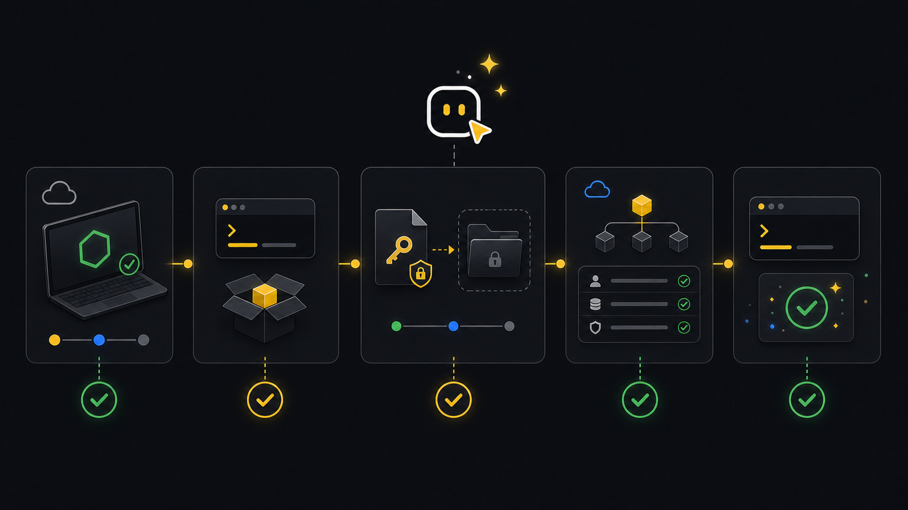

Start
Getting started.
Use this path when a new machine, workspace, CI job, or shell-capable agent needs to run real Xyte operations for the first time.
First use
The first successful setup answers four questions: can this environment run the CLI, where does the API key come from, which tenant should commands use, and can the tenant answer live checks?
Install or use npx, connect the tenant once, then run readiness before incident or fleet work.
Read the API key from a CI secret, run setup non-interactively, then produce JSON artifacts.
Let the agent check the environment, ask for a key-file path if needed, and install workspace skill guidance.
Use an explicit tenant id and provider when auto-detection cannot choose the right scope.
Ask an agent
Give the agent the setup goal, not a pile of command syntax. It should discover the runtime, ask only for missing tenant or key-file information, and stop with readiness status.
Set up xyte-cli for this workspace.
Use the configured tenant if one is already ready.
If setup is missing, ask me for the tenant id and the path to an API key file outside this repo.
Do not ask me to paste a secret into chat.
Stop when you can show tenant readiness and connectivity.Start here
Run the environment doctor first. It reports whether the current environment should use an installed binary, npx, or a workspace-local install.
xyte-cli doctor environment --format json
npx -y @xyteai/cli@latest doctor environment --format jsonIf the report recommends a workspace-local install, keep the runtime under the workspace and call the generated binary path from jobs or agents.
npm install --prefix ./.xyte-cli/runtime @xyteai/cli@latest
./.xyte-cli/runtime/node_modules/.bin/xyte-cli doctor environment --format jsonWorkflow
- RuntimeCheck Node and CLIPick installed, npx, or workspace-local execution.
- SecretRead key safelyUse a file, stdin, or a secret manager command outside the repo.
- TenantCreate connectionStore tenant profile and credential slot for later commands.
- DoctorCheck connectivityConfirm the tenant can answer before operations begin.
- ReadyRun first commandMove into guides, flows, reports, or API calls.
Connect tenant
Create the API key in Xyte under Settings, save it outside the workspace, then run setup without pasting secrets into chat or command history.
xyte-cli setup run \
--non-interactive \
--tenant <tenant-id> \
--key-file <path-outside-workspace> \
--format jsonFor CI, pass the key through stdin from the job secret. For a secret manager, make the command print only the key and exit 0.
printf "%s" "$XYTE_CLI_KEY" | xyte-cli setup run \
--non-interactive \
--tenant <tenant-id> \
--key-stdin \
--format json
xyte-cli setup run \
--non-interactive \
--tenant <tenant-id> \
--key-command "<secret-command>" \
--format jsonVerify readiness
Readiness is not just a saved key. Check the selected tenant, credential storage, and live connectivity before running fleet, incident, Edge, or write-capable workflows.
xyte-cli setup status --tenant <tenant-id> --format text
xyte-cli config doctor --tenant <tenant-id> --format json
xyte-cli status --tenant <tenant-id> --mode fast --format jsonTenant: <tenant-id>
Readiness: ready
Connectivity: connected
Next: run a guide, inspect fleet state, or list flows.Terminal and CI
In a local terminal, a person can run setup interactively. In CI, avoid prompts and feed the key from the job secret.
# Local terminal
xyte-cli setup run
xyte-cli config doctor --tenant <tenant-id> --format text
# CI step
printf "%s" "$XYTE_CLI_KEY" | npx -y @xyteai/cli@latest setup run \
--non-interactive \
--tenant <tenant-id> \
--key-stdin \
--format json
npx -y @xyteai/cli@latest status \
--tenant <tenant-id> \
--mode fast \
--format jsonAgent skills
Install the skill bundle when Codex, Claude Code, Copilot Agent mode, or another shell-capable agent will operate the CLI in this workspace.
xyte-cli init --scope project --agents all --force --no-setup
xyte-cli skills refresh- Project-scope skills stay with the workspace.
- User-scope skills stay with the developer account on this machine.
- After upgrading the CLI, refresh workspace skills again.
Common blockers
Install Node.js 22+ or run in an environment that already has it.
Move it outside the repository, check file permissions, and rerun setup.
Pass --provider xyte-org or --provider xyte-partner when auto-detection cannot choose correctly.
Run config doctor, fix tenant access or networking, then verify readiness again.